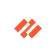
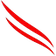
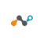
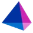
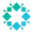
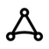

Et af de … temaer i NewDeal Invest
Software & AI
Software er de programmer, virksomheder arbejder i hver dag.
Det kan være programmet, der tjekker, at det er dig, når du logger ind på arbejdet, stemmen, der tager imod din bestilling, eller værktøjet, en designer tegner en app i. I fonden består temaet af … selskaber.
Her udforsker du fondens selskaber i temaet. Udvalget dækker ikke hele teknologiområdet.
AI-genererede forklaringer og forenklede illustrationer · Om indhold og kilder
Her udforsker du fondens investeringer, ikke en fuldstændig gennemgang af teknologiområder eller selskaber. Selskabsbeskrivelserne bygger på selskabernes egne oplysninger og øvrige angivne kilder. De er ikke manuelt faktatjekket af NewDeal Invest og kan indeholde fejl eller være forældede.
Illustrationerne forenkler sammenhængene. En forbindelse viser ikke i sig selv et dokumenteret kunde- eller leverandørforhold. Fondstal vises særskilt med kilde og dato. NewDeal Invests egne kommentarer og citater er angivet med afsender og kilde.
Forandringen
AI er flyttet ind i virksomhederne
For få år siden var kunstig intelligens noget, de fleste kun havde læst om. I 2026 brugte 59 % af de danske virksomheder med mindst 10 ansatte AI. Tre år før var det 15 %.
Jo mere arbejdet foregår i programmer og på nettet, jo mere er der at beskytte. Over halvdelen af de danske virksomheder har nu egne ansatte, der arbejder med it-sikkerhed.
De fleste programmer købes ikke længere én gang. Virksomhederne betaler et abonnement hvert år eller betaler efter, hvor meget de bruger. Det er sådan, de fleste af temaets selskaber tjener penge.

Palo Alto Networks11,5 mia. dollarRegnskabsåret til 31.7.2026 · 24,5 % mere end året før
CrowdStrike4,8 mia. dollarRegnskabsåret til 31.1.2026 · 22 % mere end året før- Palantir4,5 mia. dollar2025 · 56 % mere end året før
Selskabernes regnskabsår slutter på forskellige datoer.
Inde i virksomheden
Tryk dig gennem en virksomhed
Tegningen viser en almindelig virksomhed. Tryk på et rum for at tænde det og se, hvilket program der arbejder der, og hvilke af fondens selskaber der laver det.
Hvor sidder softwaren?
Tryk på et af de fem rum i tegningen eller på knapperne ovenfor. Hvert rum, du tænder, bliver forbundet med skyen.
Hele virksomheden kører på software
De fem rum bruger programmer fra 15 af fondens selskaber. Mange virksomheder betaler for alle fem på én gang, år efter år.
Rum 1 af 5 · Kundeservice
Får maskinen til at forstå
Når en kunde ringer eller bestiller mad i en drive-in, kan det være en AI, der lytter og svarer. Før en AI kan det, skal den trænes på mange eksempler.
Selskaberne udgør … af fonden. Sådan tjener de penge
Rum 2 af 5 · Designafdelingen
Bygger det, du ser på skærmen
Her tegner designerne en ny app, bygger virksomhedens hjemmeside og laver spil i 3D. Flere kan arbejde i den samme fil på samme tid.
Selskaberne udgør … af fonden. Sådan tjener de penge
Rum 3 af 5 · Analyseafdelingen
Gør data brugbare
Virksomheden har data i mange systemer og fra sine lastbiler ude på vejen. Programmerne samler dataene ét sted, så medarbejdere og AI kan bruge dem til at træffe beslutninger.
Selskaberne udgør … af fonden. Sådan tjener de penge
Rum 4 af 5 · Indgangen
Holder uvedkommende ude
Når en medarbejder logger ind, tjekker et program, at det er den rigtige person. Andre programmer holder øje med trafikken på nettet og stopper forsøg på at bryde ind. Bliver virksomheden alligevel ramt, kan dataene hentes tilbage fra en sikkerhedskopi.
- Palo Alto Networks
- CrowdStrike
- Cloudflare

Netskope
SailPoint
Rubrik
Selskaberne udgør … af fonden. Sådan tjener de penge
Rum 5 af 5 · Økonomiafdelingen
Ordner rejsen og udgifterne
Når en medarbejder skal på forretningsrejse, bookes rejsen og afregnes udgifterne i ét program.
Selskaberne udgør … af fonden. Sådan tjener de penge
Forretningsmodellerne
Fem slags software i fonden
Temaets selskaber laver vidt forskellige programmer, som her er delt i fem grupper efter, hvad programmerne bruges til. Bjælken viser, hvor meget hver gruppe fylder i fonden.
Sådan betaler kunden
| Betaling | Hvad kunden betaler for | Hvad AI kan betyde |
|---|---|---|
| Abonnement pr. bruger | Et fast beløb om året for hver medarbejder, der bruger programmet | Hvis AI overtager opgaver fra medarbejdere, kan kunden få brug for færre betalte brugeradgange |
| Betaling efter forbrug | Hvor meget data der gemmes, eller hvor mange beregninger der køres | AI bruger meget data og regnekraft, så regningen kan vokse |
| Abonnement på en platform | Adgang til et samlet system, ofte efter virksomhedens størrelse | Nye AI-funktioner kan sælges som tillæg til det, kunden allerede har |
Skemaet er en forenkling. Mange selskaber blander flere af måderne, og nogle sælger også rådgivning og hjælp til at komme i gang.
Sikkerhed
…af fonden
Virksomheder og myndigheder skal beskytte deres netværk, computere og data mod angreb. Selskaberne tjener mest på abonnementer, som kunderne betaler år for år. Hos CrowdStrike kom 95 % af omsætningen fra abonnementer i regnskabsåret til 31.1.2026.
- Palo Alto NetworksCybersikkerhed med AI til virksomheder, tjenesteudbydere og myndigheder.
- CrowdStrikeSikkerhedssoftware til virksomheder. Platformen hedder Falcon.
- CloudflareGør virksomheders netværk og programmer mere sikre og hurtigere.
- NetskopeEn sikkerhedsplatform over nettet, som beskytter adgangen til virksomhedens programmer og data.
- SailPointStyrer, hvem der har adgang til hvad: ansatte, eksterne, maskiner og AI-agenter.
- RubrikBeskytter data i skyen og genopretter dem efter cyberangreb.
Data og analyse
…af fonden
Virksomheder og myndigheder samler deres data ét sted og bruger dem til at træffe beslutninger. Palantir tjener på at stille sin software til rådighed og fik 54 % af omsætningen fra offentlige kunder i 2025. Snowflake tager betaling efter, hvor meget kunderne bruger platformen, og Samsara sælger abonnementer på sensorer og software til fx lastbiler.
- PalantirSoftware, der samler organisationers data og bruger dem i beslutninger og drift.
- SnowflakeEn platform over nettet, hvor kunder kan samle, dele og analysere data fra flere systemer.
- SamsaraEn platform, der samler data fra virksomheders køretøjer og maskiner, fx en vognpark, så virksomheden kan følge dem.
AI-programmer og træningsdata
…af fonden
Restauranter, bilproducenter og kundeservice bruger stemme-AI, og AI-selskaber køber hjælp til at træne deres modeller. SoundHound AI tjener på at lade andre bruge sin stemme-AI. Innodata tjener på at levere data og arbejde, der træner og afprøver AI.
Udviklerværktøjer og web
…af fonden
Designere, spiludviklere og små virksomheder bygger apps, spil og hjemmesider. Figma og Wix tjener på abonnementer. Unity tjener mest på annoncer i de spil, der er bygget med selskabets værktøjer.
Programmer til virksomhedens hverdag
…af fonden
Virksomheder booker de ansattes forretningsrejser og styrer deres udgifter. Navan tjener på rejserne og på brugen af programmet, så omsætningen følger med, når virksomhederne rejser mere eller mindre.
Flere af fondens selskaber arbejder også med området. Du finder dem desuden i disse temaer:  Upstart og
Upstart og  Lemonade (Fintech),
Lemonade (Fintech),  MNTN,
MNTN,  Zeta Global og Coursera (Platformsøkonomi).
Zeta Global og Coursera (Platformsøkonomi).
Grupperne er NewDeal Invests egen opdeling. Beskrivelserne bygger på selskabernes egne regnskaber, se kilderne. Andele i PMINDI pr. … (fondens data).
Forklaringen
Tre måder at betale for software på
Prisen bestemmer, hvad der skal til, for at selskabet tjener mere. Det er derfor vigtigt at vide, hvordan kunderne betaler.
Pr. bruger
Virksomheden betaler for hver medarbejder, der har adgang til programmet. Får den flere ansatte, betaler den mere.
Eksempel: Figma
Efter forbrug
Virksomheden betaler for, hvor meget den faktisk bruger, fx hvor meget data den behandler. Bruger den mere, betaler den mere.
Eksempel: Snowflake
Via annoncer
Selve værktøjet kan være billigt. Pengene kommer fra annoncer, der vises for brugerne af de spil og apps, der er bygget med det.
Eksempel: Unity Software
Det har vi skrevet
NewDeal Invests perspektiv
Ordret uddrag af NewDeal Invests egne ugebreve og indlæg om temaet, med dato og link til hele teksten. Det er ikke en anbefaling.
Læs hele teksten på bloggen (åbner i nyt vindue)"Mange SaaS-løsninger afregnes per bruger. Når AI øger produktiviteten hos kunderne, reduceres behovet for medarbejdere, og dermed også antallet af licenser. Det skaber strukturelt pres på omsætningsvæksten."
Risici
Risici ved software og AI
Færre brugere
Programmer, der betales pr. bruger, kan tjene mindre, hvis kunderne får brug for færre medarbejdere.
Få store kunder
Én kunde stod for omkring 58 % af Innodatas omsætning i 2025. Mister et selskab en stor kunde, kan omsætningen falde meget.
Offentlige kunder
Palantir fik 54 % af omsætningen fra offentlige kunder i 2025. Politiske beslutninger og offentlige budgetter kan ændre efterspørgslen.
Vækst gennem opkøb
SoundHound AI's omsætning steg 99 % i 2025, især fordi selskabet havde købt andre selskaber. Den slags vækst kan være svær at gentage.
Store konkurrenter
Store selskaber laver også programmer til sikkerhed, data og AI og kan presse priserne.
Kilder: risikoafsnittene og tallene i årsrapporterne for 2025 fra Innodata (åbner i nyt vindue), Palantir (åbner i nyt vindue) og SoundHound AI (åbner i nyt vindue) samt Palo Alto Networks (åbner i nyt vindue) for regnskabsåret til 31.7.2026. Listen er et udvalg og ikke en fuldstændig oversigt.
Kilder og kreditering
Tal og tekst
- Temaer og grupper: NewDeal Invests egen opdeling.
- AI i danske virksomheder (15 % i 2023, 28 % i 2024, 42 % i 2025 og 59 % i 2026, virksomheder med mindst 10 ansatte): Danmarks Statistik, Nyt 12.3.2025 (åbner i nyt vindue) og ITAV28 (åbner i nyt vindue).
- Egne ansatte med it-sikkerhed (52 % i 2026): Danmarks Statistik, it-anvendelse i virksomheder (åbner i nyt vindue).
- Palo Alto Networks: regnskabsmeddelelse for regnskabsåret til 31.7.2026 (åbner i nyt vindue), omsætning 11.480 mio. dollar mod 9.221 mio. dollar.
- CrowdStrike: regnskabsmeddelelse for regnskabsåret til 31.1.2026 (åbner i nyt vindue), omsætning 4,81 mia. dollar (+22 %), heraf abonnementer 4,56 mia. dollar.
- Palantir: regnskabsmeddelelse for 2025 (åbner i nyt vindue), omsætning 4.475 mio. dollar (+56 %), offentlige kunder 2.402 mio. dollar, og årsrapport 2025 (åbner i nyt vindue).
- Innodata og SoundHound AI: årsrapporter 2025 fra Innodata (åbner i nyt vindue) og SoundHound AI (åbner i nyt vindue).
- Unity og Navan: Unitys kvartalsrapport for 2. kvartal 2026 (åbner i nyt vindue) og Navans kvartalsrapport for kvartalet til 31.7.2026 (åbner i nyt vindue).
- Citatet: NewDeal Invest, "Verden æder software", 19.1.2026 (åbner i nyt vindue).
Tegninger og logoer
- Tegningen af virksomheden, ikonerne og de små figurer er forenklede tegninger lavet af NewDeal Invest med hjælp fra AI. Virksomheden på tegningen er opfundet.
- Logoer tilhører de enkelte selskaber.